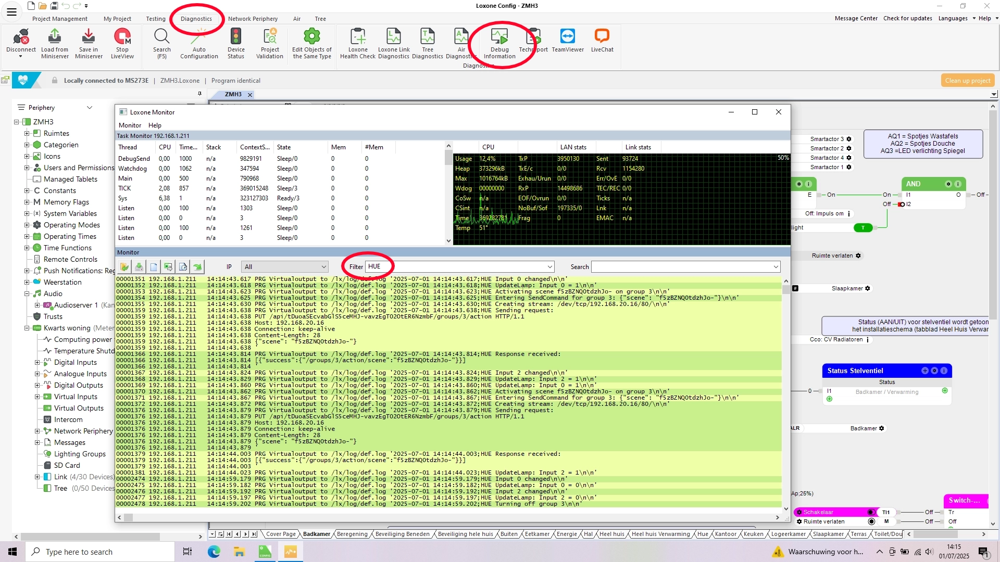

Overview
This repository contains a Pico C script to integrate Philips Hue lighting with a Loxone smart home system. Originally developed by Marcel Schreiner, this script has been adapted to trigger Philips Hue scenes and turn off entire Hue scene groups.
What is this for? The script bridges your Loxone Miniserver and Philips Hue lights, allowing Loxone inputs (e.g., buttons or sensors) to control pre-set Hue scenes (like "Relax" or "Bright").
Credits
This project builds on the original work by Marcel Schreiner, who developed the initial Pico C code for controlling individual Hue lamps and groups. Full credit goes to Marcel for the original idea and implementation.
How It Works
The script enables Loxone inputs to control Philips Hue scenes or turn off light groups by sending HTTP commands to the Hue Bridge. Follow the steps below to set it up.
Step 1: Configure Your Hue Bridge
- Assign a Static IP Address: In the Philips Hue app, go to Settings > Bridge > Network Settings and set a static IP (e.g.,
192.168.1.100). - Create a Hue API User: Generate an API key, see the Philips Hue Developer Portal. Example:
1028d66426293e821ecfd9ef1a0731df. - Get Scene IDs: Access scene data at
https://. The JSON lists scene IDs and groups./api/ /scenes
Example JSON snippet for scenes in group 3:
"f5zBZNQ0tdzhJo-": {
"name": "Hoofdverlichting",
"type": "GroupScene",
"group": "3",
"lights": ["18", "20", "26"],
...
},
"OxEpoBvjp4n2wB6": {
"name": "Ochtend",
"type": "GroupScene",
"group": "3",
"lights": ["18", "20", "26"],
...
}
Step 2: Insert the Program Block in Loxone Config
To use the Pico C script in Loxone Config, you need to add a Program block to your project:
- Open the page in Loxone Config where you want to place the Program block.
- Click Add Function Block in the toolbar, select General, then choose Program, or press
F5, type "Program" in the search bar, and select it. - The Program block will appear on the page.
- Double-click the Program block and paste the code from the
hue_scenes_script.cfile, available at GitHub.
Step 3: Configure the Script
In the script’s "Configure your system here" section, enter:
- Hue Bridge IP Address: E.g.,
192.168.1.100. - Port: Default is
80. - Username/API Key: Your API key from Step 1 (example:
1028d66426293e821ecfd9ef1a0731df). - Input Types: Set inputs (I0-I12) to
TYPE_SCENEorTYPE_GROUP_OFF. - Group IDs: Assign Hue group numbers (e.g.,
3). - Scene IDs: For
TYPE_SCENE, provide scene IDs (e.g.,f5zBZNQ0tdzhJo-).
Example configuration based on the JSON file above:
// Set type of input (I0-I12)
bulbType[0] = TYPE_SCENE; // I0: Activates a scene for group 3
bulbType[1] = TYPE_SCENE; // I1: Activates another scene for group 3
bulbType[2] = TYPE_GROUP_OFF; // I2: Turns off group 3
// Set group ID
bulbId[0] = 3; // I0: Group 3
bulbId[1] = 3; // I1: Group 3
bulbId[2] = 3; // I2: Group 3
// Set scene ID
sceneId[0] = "f5zBZNQ0tdzhJo-"; // I0: "Hoofdverlichting" scene
sceneId[1] = "OxEpoBvjp4n2wB6"; // I1: "Ochtend" scene
sceneId[2] = ""; // I2: No scene (group off)
Step 4: Set Up the Lighting Controller
- Use a Loxone Lighting Controller in Switch mode.
- Connect a
TYPE_GROUP_OFFinput to the controller for "Mood 0" (All OFF). - Ensure only ONE scene is active at a time to avoid conflicts.
Tips for Success
- Test your setup in Loxone Config to verify scenes and group OFF commands work.
- Why is the
TYPE_GROUP_OFFinput inverted? In Loxone, switching between scenes (e.g., from "Relax" to "Bright") should not trigger theTYPE_GROUP_OFFinput, as this would turn off the light group unexpectedly. To prevent this, theTYPE_GROUP_OFFinput is designed to be "On" by default, keeping the lights active during scene changes. However, when you want to turn off the entire light group (e.g., by double-clicking a Loxone Touch switch), Loxone sets all lighting controller outputs to "Off." Due to the script's inversion logic, this "Off" signal is interpreted as "On" forTYPE_GROUP_OFF, triggering the command to turn off the Hue light group. This inversion ensures seamless integration with Loxone’s behavior. - For
TYPE_GROUP_OFF, the script inverts Loxone’s 0 signal for proper behavior. - Maximum Program Blocks and Parallel Usage: Loxone supports a maximum of 8 program blocks per Miniserver. This means you can configure up to 8 different Pico C scripts, including the Hue Scene Controller. You can use the original Pico C code from Marcel Schreiner in parallel to control individual Philips Hue lamps alongside this scene controller. Ensure that the scripts do not send conflicting commands to the same lamps or groups to avoid unexpected behavior.
- Enable debugging with
ENABLE_DEBUGGING = 1to view logs (prefixed with "HUE").
